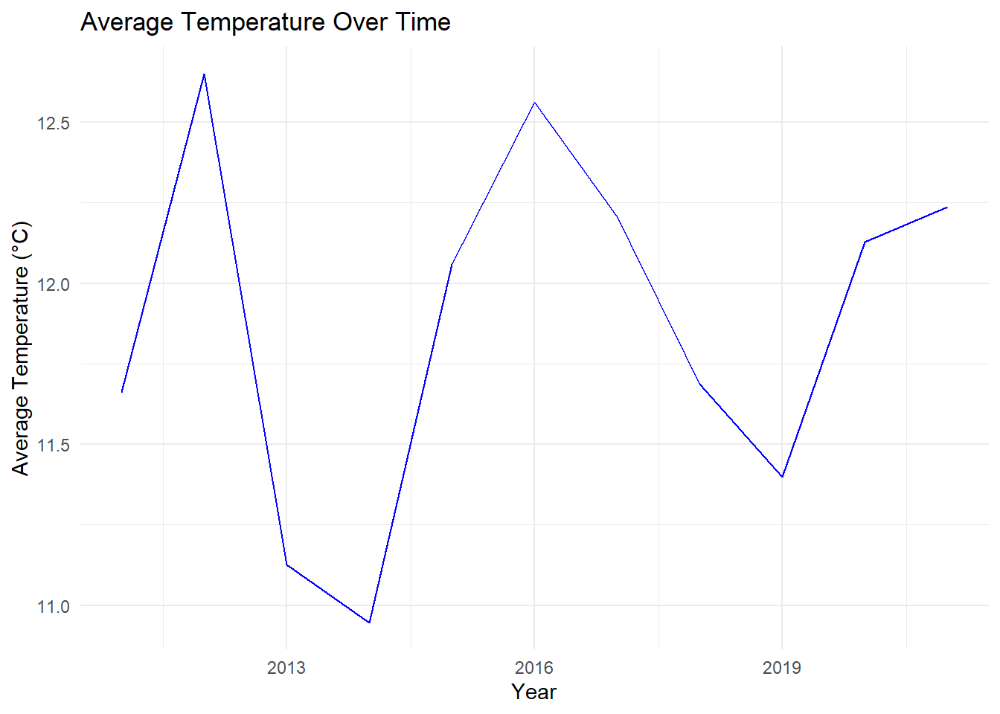
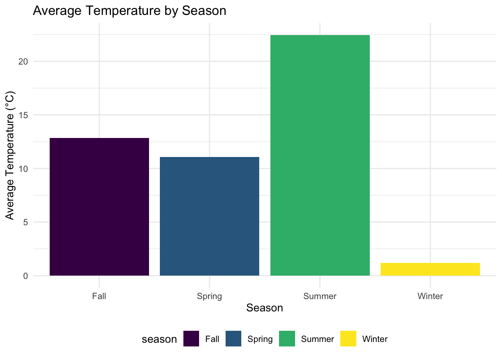

Report
Zihan Lin
Motivation
Extreme weather is on the rise due to climate change, with many, especially those who come from a lower socioeconomic background, already feeling the adverse effects changing weather patterns. Asthma is a co-morbidity for other chronic diseases and also disproportionately affects those from a lower economic status. In this project, we want to focus on asthma prevalence/incidence as hotter temperatures can lead to more pollen, air pollution, and other lung irritants. Studying these trends will help understand the health risks in vulnerable populations.
Key Questions:
1. How do asthma cases correlate with temperature extremes?
2. Are there temporal or spatial patterns in asthma prevalence?
Data
To retrieve the temperature data, different options were explored from within the rnoaa package. meteo_pull_monitors() was first explored, but due to the number of monitors from each state, it was not realistic to pull data from each monitor to calculate the average temperature over a 10-year period. ncdc() was then investigated for use. This uses the National Climatic Data Center to access weather data and already has a TAVG variable for the average temperature. However, there were limitations as it could only gather data one year at a time and there was also issues with the API of this site. Using online resources was not realistic as datasets online were typically separated by year/month/day so getting a seasonal average was not possible. In the end, the temperature data was extracted using meteo_pull_monitors(). 30 monitors from each state were randomly selected and the daily mean of each station was found by averaging the minimum and maximum temperatures (the TAVG as reported by meteo_pull_monitors() could not be used as many stations were missing this data) for every day from 1/1/2011 to 12/31/2021 in every state. The data was then grouped by state, year, and season to find the seasonal average for every state in every year.
The analysis uses two primary datasets: Asthma Data and Temperature Data.
# Load datasets
asthma_data <- read_csv("data/asthma_data.csv")## Rows: 559 Columns: 3
## ── Column specification ────────────────────────────────────────────────────────
## Delimiter: ","
## chr (1): state
## dbl (2): year_name, prevalence_percent
##
## ℹ Use `spec()` to retrieve the full column specification for this data.
## ℹ Specify the column types or set `show_col_types = FALSE` to quiet this message.The Asthma Data consists of 559 observations and 3 variables, which include details such as the date of record, the region, and the number of asthma cases reported (cases). A brief look at the first few rows reveals the following column names: year_name, state, prevalence_percent, NA, NA, providing an overview of the key information captured.
temp_data <- read_csv("data/temp_data.csv")## Rows: 2193 Columns: 4
## ── Column specification ────────────────────────────────────────────────────────
## Delimiter: ","
## chr (2): state, season
## dbl (2): year, avg_temp
##
## ℹ Use `spec()` to retrieve the full column specification for this data.
## ℹ Specify the column types or set `show_col_types = FALSE` to quiet this message.The Temperature Data contains 2193 observations and 4 variables, with key columns including the date of the temperature reading (date), the region (region), and the recorded temperature (temp). This dataset provides critical environmental context for analyzing the relationship between temperature and asthma cases.
Exploratory Data Analysis
# Summary of asthma data
asthma_summary <- asthma_data %>%
summarize(
avg_prevalence = mean(prevalence_percent, na.rm = TRUE),
min_prevalence = min(prevalence_percent, na.rm = TRUE),
max_prevalence = max(prevalence_percent, na.rm = TRUE)
)
# Create a tidy table for asthma summary using kable
asthma_summary %>%
knitr::kable(
col.names = c("Average Prevalence (%)", "Minimum Prevalence (%)", "Maximum Prevalence (%)"),
caption = "Summary Statistics for Asthma Prevalence"
)| Average Prevalence (%) | Minimum Prevalence (%) | Maximum Prevalence (%) |
|---|---|---|
| 9.422719 | 6.2 | 13.2 |
The average prevalence of asthma across the dataset is approximately 9.42%. The minimum prevalence is 6.2%, while the maximum prevalence is 13.2%. This range suggests notable variability in asthma prevalence across regions or time periods.
# Summary of temperature data
temp_summary <- temp_data %>%
summarize(
avg_temp_overall = mean(avg_temp, na.rm = TRUE),
min_temp = min(avg_temp, na.rm = TRUE),
max_temp = max(avg_temp, na.rm = TRUE)
)
# Create a tidy table for temperature summary
temp_summary %>%
knitr::kable(
col.names = c("Average Temperature (°C)", "Minimum Temperature (°C)", "Maximum Temperature (°C)"),
caption = "Summary Statistics for Temperature Data"
)| Average Temperature (°C) | Minimum Temperature (°C) | Maximum Temperature (°C) |
|---|---|---|
| 11.87722 | -14.00078 | 30.258 |
temp_summary## # A tibble: 1 × 3
## avg_temp_overall min_temp max_temp
## <dbl> <dbl> <dbl>
## 1 11.9 -14.0 30.3The overall average temperature is approximately 11.88°C, with a wide range from -14.0°C (minimum) to 30.26°C (maximum). The large temperature range indicates that the dataset spans multiple regions with diverse climates.
# Average temperature by year
yearly_temp_summary <- temp_data %>%
group_by(year) %>%
summarize(
avg_temp = mean(avg_temp, na.rm = TRUE)
)
# Create a tidy table for yearly temperature summary
yearly_temp_summary %>%
knitr::kable(
col.names = c("Year", "Average Temperature (°C)"),
caption = "Average Temperature by Year"
)| Year | Average Temperature (°C) |
|---|---|
| 2011 | 11.66251 |
| 2012 | 12.65061 |
| 2013 | 11.12633 |
| 2014 | 10.94758 |
| 2015 | 12.05795 |
| 2016 | 12.56135 |
| 2017 | 12.20775 |
| 2018 | 11.68774 |
| 2019 | 11.39799 |
| 2020 | 12.12918 |
| 2021 | 12.23760 |
yearly_temp_summary## # A tibble: 11 × 2
## year avg_temp
## <dbl> <dbl>
## 1 2011 11.7
## 2 2012 12.7
## 3 2013 11.1
## 4 2014 10.9
## 5 2015 12.1
## 6 2016 12.6
## 7 2017 12.2
## 8 2018 11.7
## 9 2019 11.4
## 10 2020 12.1
## 11 2021 12.2ggplot(yearly_temp_summary, aes(x = year, y = avg_temp)) +
geom_line(color = "blue") +
labs(
title = "Average Temperature Over Time",
x = "Year",
y = "Average Temperature (°C)"
)
The line plot shows annual average temperatures over the years. There are visible fluctuations, with some years showing higher average temperatures (e.g., 2012) and others lower (e.g., 2014). The average temperature peaked around 2012 and dipped notably around 2013-2014. There is no clear upward or downward trend in the dataset; instead, temperatures appear cyclical or influenced by short-term climate variations.
# Average temperature by season
seasonal_temp_summary <- temp_data %>%
group_by(season) %>%
summarize(
avg_temp = mean(avg_temp, na.rm = TRUE)
)
# Create a tidy table for seasonal temperature summary
seasonal_temp_summary %>%
knitr::kable(
col.names = c("Season", "Average Temperature (°C)"),
caption = "Average Temperature by Season"
)| Season | Average Temperature (°C) |
|---|---|
| Fall | 12.850739 |
| Spring | 11.056397 |
| Summer | 22.445812 |
| Winter | 1.175468 |
seasonal_temp_summary## # A tibble: 4 × 2
## season avg_temp
## <chr> <dbl>
## 1 Fall 12.9
## 2 Spring 11.1
## 3 Summer 22.4
## 4 Winter 1.18ggplot(seasonal_temp_summary, aes(x = season, y = avg_temp, fill = season)) +
geom_bar(stat = "identity") +
labs(
title = "Average Temperature by Season",
x = "Season",
y = "Average Temperature (°C)"
)
The bar plot displays the average temperature for each season. Summer is significantly warmer (22.45°C on average), while Winter is coldest (1.18°C on average). Fall and Spring fall in between. The seasonal temperature differences are as expected, with clear distinctions between warmer and colder periods. The significant gap between Winter and Summer highlights the need to examine whether asthma prevalence increases during colder months due to weather-induced triggers.
# Temperature by state
state_temp_summary <- temp_data %>%
group_by(state) %>%
summarize(
avg_temp = mean(avg_temp, na.rm = TRUE)
)
ggplot(state_temp_summary, aes(x = reorder(state, -avg_temp), y = avg_temp)) +
geom_bar(stat = "identity", fill = "steelblue") +
coord_flip() +
labs(
title = "Average Temperature by State",
x = "State",
y = "Average Temperature (°C)"
)
The horizontal bar plot ranks states by their average temperature. States on the left (e.g., colder climates) have lower average temperatures, while those on the right (e.g., warmer climates) have higher averages. There is substantial geographic variation in average temperatures across states. States like Alaska are likely on the colder end, while southern states such as Florida or Texas may be on the warmer end.
# Merge datasets by year and state
merged_data <- inner_join(
asthma_data,
temp_data,
by = c("year_name" = "year", "state" = "state")
)
# Display first few rows of merged data
head(merged_data)## # A tibble: 6 × 5
## year_name state prevalence_percent season avg_temp
## <dbl> <chr> <dbl> <chr> <dbl>
## 1 2011 AL 8 Fall 17.0
## 2 2011 AL 8 Spring 17.9
## 3 2011 AL 8 Summer 27.2
## 4 2011 AL 8 Winter 7.25
## 5 2011 AK 8.2 Fall 1.83
## 6 2011 AK 8.2 Spring 2.12The merged dataset includes columns for year_name, state, prevalence_percent, season, and avg_temp. Each row represents data for a specific state, year, and season, showing asthma prevalence percentages and average temperature.
# Calculate correlation
correlation <- cor(
merged_data$prevalence_percent,
merged_data$avg_temp,
use = "complete.obs"
)
cat("The correlation between asthma prevalence and temperature is:", correlation)## The correlation between asthma prevalence and temperature is: -0.1330356The correlation between asthma prevalence and temperature is -0.1330356. A correlation of -0.13 suggests a weak negative relationship between temperature and asthma prevalence. This implies that as temperatures increase, asthma prevalence slightly decreases, but the relationship is not strong. This weak correlation indicates that other factors may play more significant roles in asthma prevalence.
# Scatter plot with regression line
ggplot(merged_data, aes(x = avg_temp, y = prevalence_percent)) +
geom_point(alpha = 0.6) +
geom_smooth(method = "lm", se = FALSE, color = "blue") +
labs(
title = "Asthma Prevalence vs Temperature",
x = "Average Temperature (°C)",
y = "Asthma Prevalence (%)"
)## `geom_smooth()` using formula = 'y ~ x'
The scatter plot visualizes the relationship between average temperature (x-axis) and asthma prevalence (y-axis). A regression line is overlaid, showing a slight downward slope, consistent with the weak negative correlation. The data points are widely scattered, confirming that temperature alone does not strongly predict asthma prevalence. The slight downward slope of the regression line reflects the weak negative correlation.
Clusters of points around specific temperature ranges (e.g., ~10–20°C) suggest that more observations are concentrated in these moderate temperatures. Warmer temperatures might reduce asthma triggers like cold air exposure, leading to slightly lower prevalence. Other seasonal factors (e.g., pollen in Spring or high humidity in Summer) could interact with temperature and affect asthma prevalence.